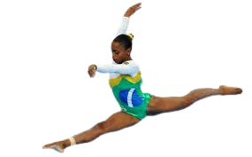
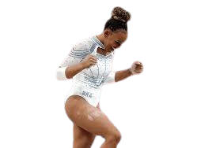
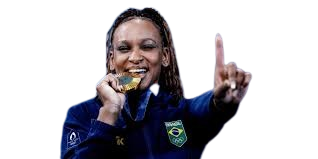

CURIOSIDADES GINASTAS ARTÍSTICAS.
CONHEÇA AS BRASILEIRAS QUE SE DESTACARAM.
Ginástica artística é uma prática corporal que envolve diferentes habilidades motoras, tais como força,
consciência corporal e flexibilidade. A modalidade é caracterizada pelos movimentos corporais e suas expressões artísticas.
Atualmente, no ano de 2024 estamos contemplando as Olimpíadas em Paris, na França; conquistando medalhas e
redescobrindo os limites de nossos atletas na ginástica artística. A competição deste ano tem sido marcada por apresentações
impressionantes, onde a técnica e a criatividade se encontram para criar performances que encantam o público.
As provas de solo, barras assimétricas, cavalo com alças, argolas, salto e barra fixa são apenas algumas das disciplinas
onde a ginástica artística brilha. Cada aparelho exige um conjunto único de habilidades, testando os limites da força, equilíbrio e
coordenação dos atletas.
DAIANE DOS SANTOS
Daiane dos Santos é uma das mais renomadas ginastas brasileiras da história, celebrada por sua habilidade excepcional na ginástica artística, especialmente no
solo. Nascida em Porto Alegre, em 1983, Daiane começou sua jornada na ginástica aos sete anos, destacando-se rapidamente por seu talento natural e dedicação incansável.
Sua trajetória ganhou notoriedade internacional quando, em 2003, Daiane se tornou a primeira ginasta sul-americana a conquistar o título mundial no solo, durante o Campeonato
Mundial de Ginástica Artística em Anaheim, Estados Unidos. Esse feito histórico não apenas colocou o Brasil no mapa da ginástica mundial, mas também inspirou gerações
de atletas brasileiros a perseguirem seus sonhos olímpicos.
Em suma, Daiane dos Santos é um ícone do esporte brasileiro e uma figura reverenciada na ginástica mundial, cuja trajetória exemplifica o poder transformador do talento e da
dedicação no esporte de alto nível.

REBECA ANDRADE

Rebeca Andrade é uma atleta brasileira que conquistou o coração do mundo com sua determinação, talento e perseverança. Sua jornada rumo ao ouro olímpico em Paris é
um testemunho de resiliência, persistência e excelência no na ginástica artística.
Nasceu em Guarulhos, São Paulo, em 8 de maio de 1999, Rebeca descobriu sua paixão pela ginástica artística desde muito jovem, na infância, e enfrentou desafios significativos ao
longo do caminho. Em 2012, aos 13 anos, ela competiu em seu primeiro Campeonato Nacional, demonstrando um potencial impressionante.
A ascensão de Rebeca Andrade continuou em ritmo acelerado. Em 2014, ganhou destaque internacional ao competir no Campeonato Mundial de Ginástica em Nanjing, China. Sua habilidade
excepcional nos aparelhos de solo e salto chamou a atenção, colocando-a como uma das promessas da ginástica mundial.
No entanto, sua jornada não foi sem obstáculos.
Lesões frequentes, incluindo graves problemas no joelho, ameaçaram sua carreira em várias ocasiões. Em 2015, passou por sua primeira cirurgia no joelho direito, e em 2019,
teve que lidar com uma nova lesão que a afastou temporariamente das competições.
Apesar dos contratempos, Rebeca mostrou uma incrível determinação em superar cada desafio. Sua resiliência foi recompensada nos Jogos Olímpicos de Tóquio em 2021, onde conquistou
a medalha de prata no individual geral. Seu treinamento intenso e foco incansável foram cruciais para seu sucesso nos campeonatos mundiais subsequentes, onde consolidou sua posição
como uma das principais ginastas do mundo.
Finalmente, em Paris, nos Jogos Olímpicos de 2024, Rebeca Andrade alcançou o ápice de sua carreira ao conquistar a medalha de ouro no individual geral. Sua performance impecável e
emocionante na competição destacou não apenas sua técnica excepcional, mas também sua determinação inabalável e sua capacidade de superar adversidades. A trajetória de Rebeca Andrade
até o ouro olímpico em Paris é um exemplo inspirador de como a paixão, o trabalho árduo e a resiliência podem transformar sonhos em realidade.
Devemos ter orgulho de Rebeca Andrade ser brasileira!!

Conquista de medalha de ouro nas Olímpiadas de Paris, France em 2024. Vídeo transmitido em: